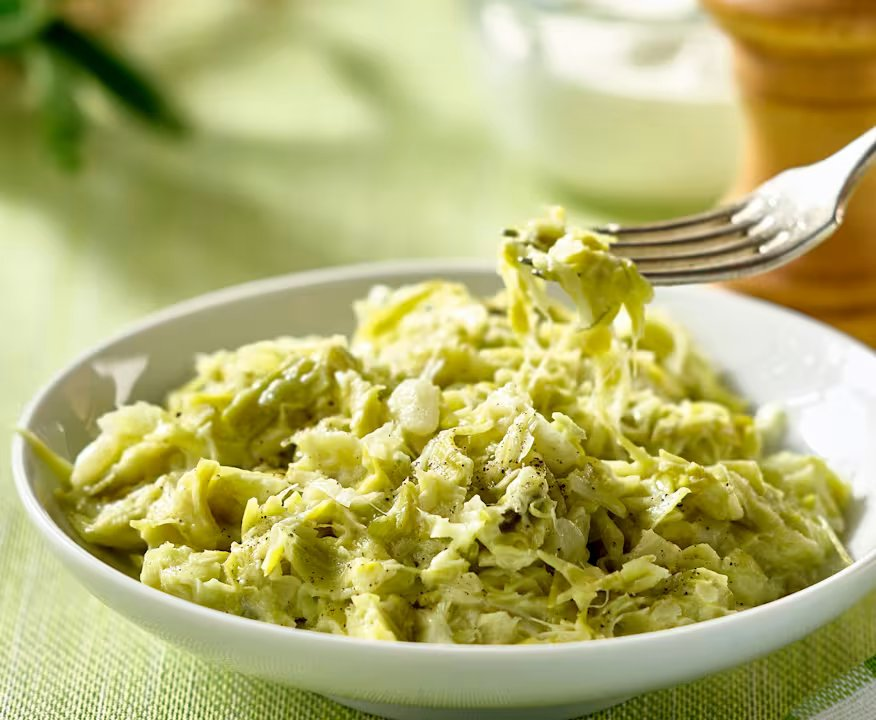

Fondue de poireaux
Ingrédients
4×
- 800 g de poireaux
- 30 g de beurre doux
- 50 g de crème fraîche épaisse
- 3 pincées de sel
- 2 pincées de poivre

Préparation
Étape 1
Couper 800 g de poireaux en tronçons. En hacher la moitié 5 sec/vitesse 5, réserver, puis hacher le reste de la même façon.
Étape 2
Remettre les poireaux réservés et ajouter 30 g de beurre doux. Cuire 10 min/100ºC/sens inverse/vitesse 1, puis sans le panier sur le couvercle 10 min/120ºC/sens inverse/vitesse mijotage.
Étape 3
Ajouter 50 g de crème fraîche épaisse, 3 pincées de sel et 2 pincées de poivre, mélanger 1 min/100ºC/sens inverse/vitesse 1 sans le gobelet.
Conseils
- Utiliser de préférence le blanc, le vert est plus dur.
- Servir avec un poisson ou des fruits de mer.
Résumé
800 g de poireaux
hacher 5 sec/vitesse 5 hacher
30 g de beurre doux
Cuire 10 min/100ºC/sens inverse/vitesse 1 10 min/120ºC/sens inverse/vitesse mijotage
50 g de crème fraîche épaisse
3 pincées de sel
2 pincées de poivre
mélanger 1 min/100ºC/sens inverse/vitesse 1